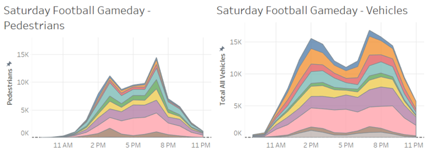
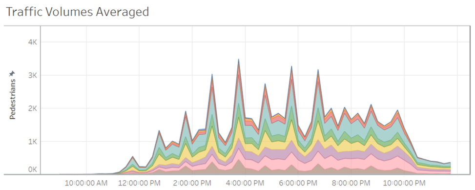

Home
Problem Overview
Approaches
Data Visuals
Findings
Football games will obviously have an effect on traffic volumes at a D1 school like the University of Maryland at College Park. What we did not quite expect was to be able to clearly see anything that indicated the result of the game. However, there is a clear indication that the game was a one-sided affair as there are two peaks in traffic volume. One occurs at around 2PM, which is about an hour before the end of regulation. The other occurs around 7PM, or three hours after the end of game regulation. It is reasonable to think these peaks occurred when fans either left the game early knowing their team was doomed, or left late as they stuck around to enjoy other festivities associated with college football.
In addressing the question pertaining to traffic patterns based on class schedule, the averaged pedestrian data seemed to be quite telling. The peaks and valleys in pedestrian traffic fluctuate by about 2,000 individuals at times with the highest variance. Before those steeper variations are two smaller ones to start an averaged day. We found this to be at least somewhat odd, as the pedestrian traffic recorded before noon is quite limited. One reason we think this may be is due to the locations of sensors in relationship to parking lots. The sensors may have missed traffic volumes of pedestrians that park further away from sensors and possibly walk to earlier classes along routes that were not monitored.
As temperature rises, cars decrease and pedestrians increase at the South Gate, South View. However, the effect of this is minute compared to the effect of time of day, so for the final model, temperature will not be included.
A regression Model was able to be built to predict the traffic of cars using spline regression, dependent on the location, time of day, and weekday. Due to the limitations of the data, however, the data could not be split in order to test and train the model, as the removal of a few data points would introduce a lot of variation and error. Therefore, more data should be included before the model is tested and used for predictions.